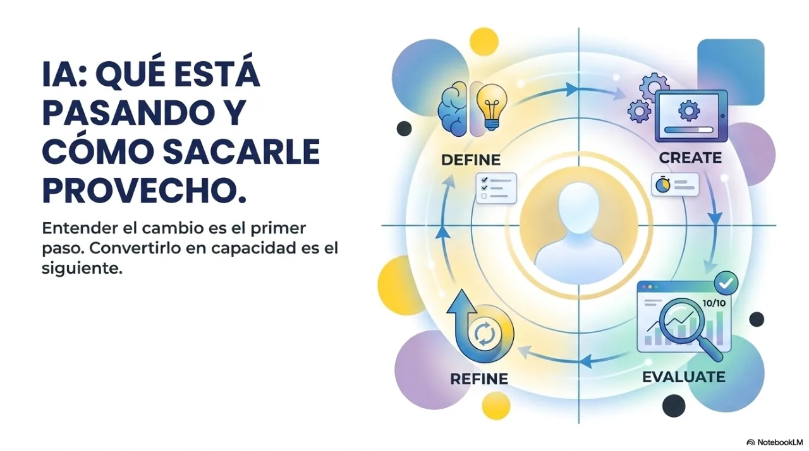
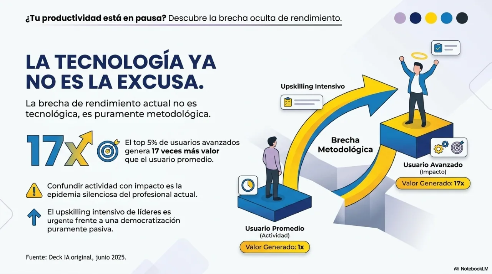
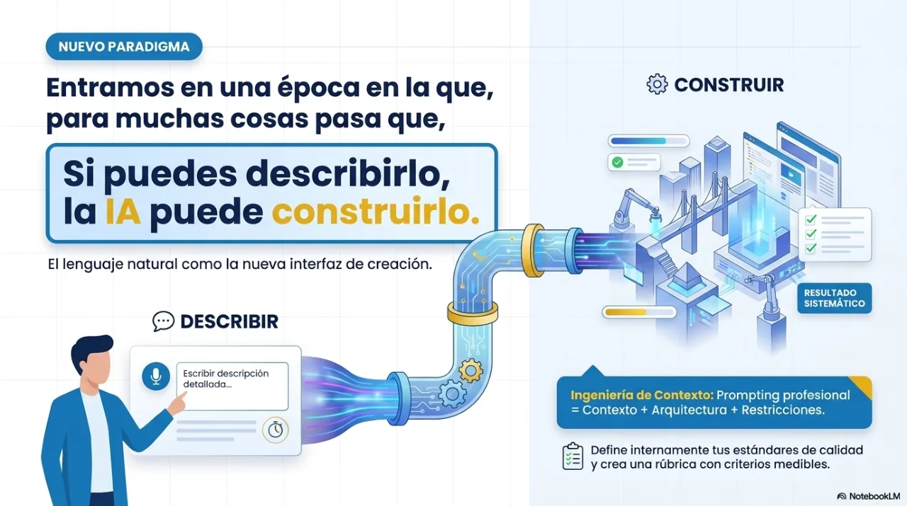
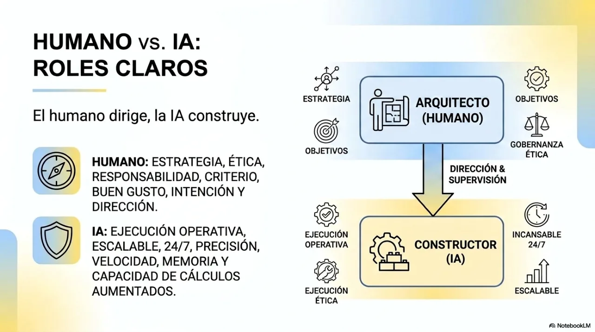
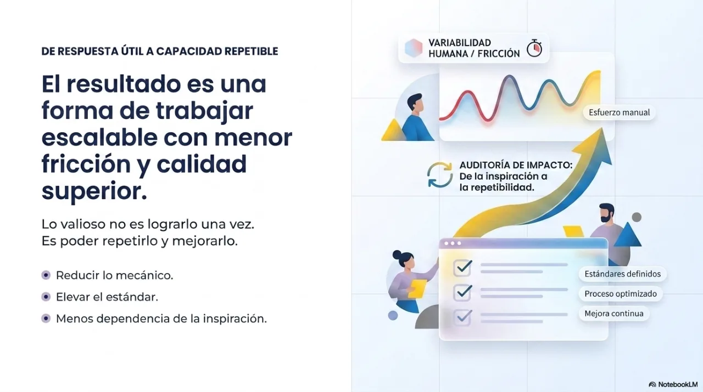
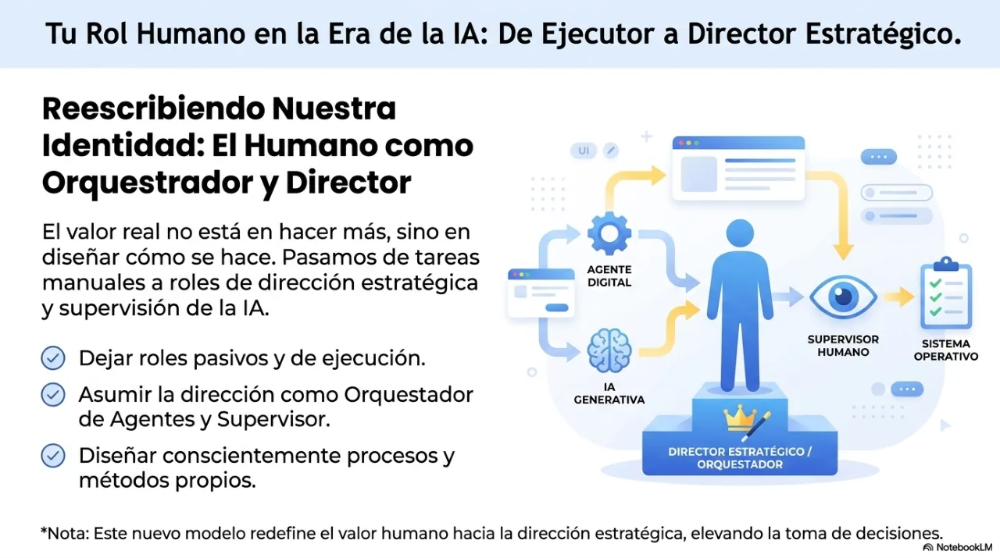
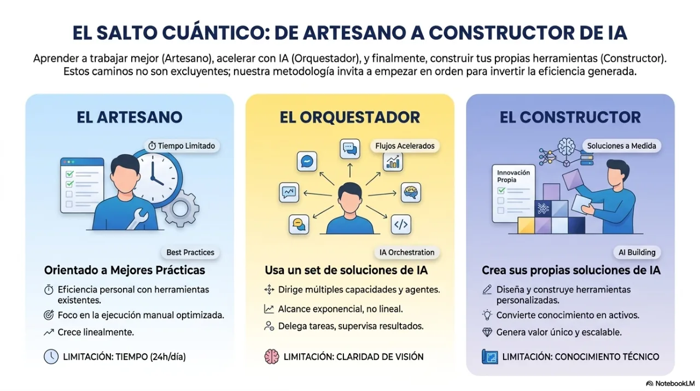
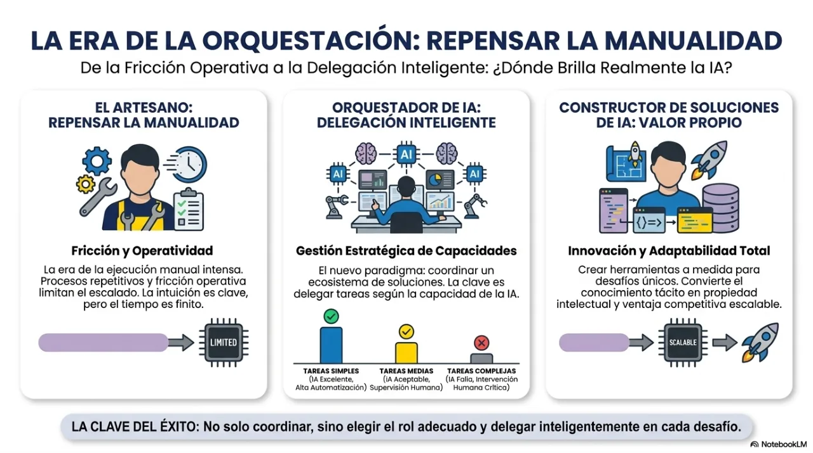
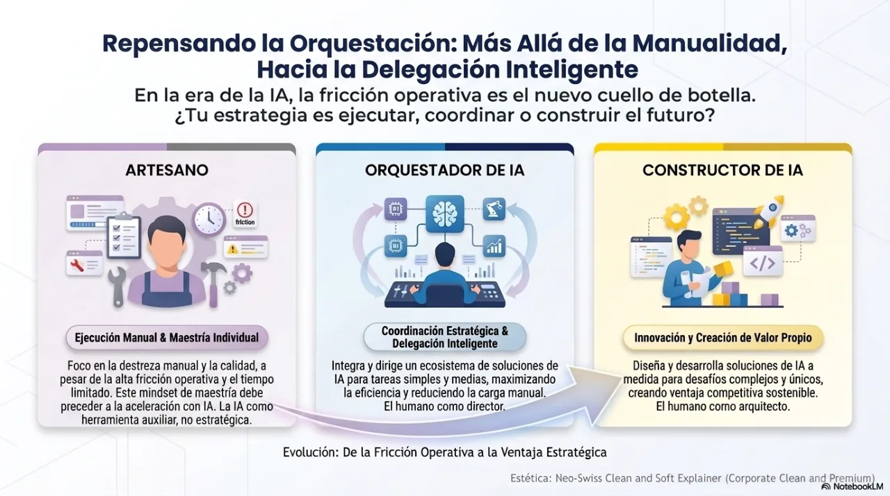

Masterclass oficial · PDF · 18
IA: o que está acontecendo e como aproveitar
Percorra a masterclass real em 18 páginas, navegue entre elas ou baixe o PDF completo.
Facilitada porJavier Montaño · Fundador da MetodologIA
Use ← → ou abra o índice. Sem JavaScript, as 18 páginas aparecem em ordem.
Ver as 18 páginas1 / 18















